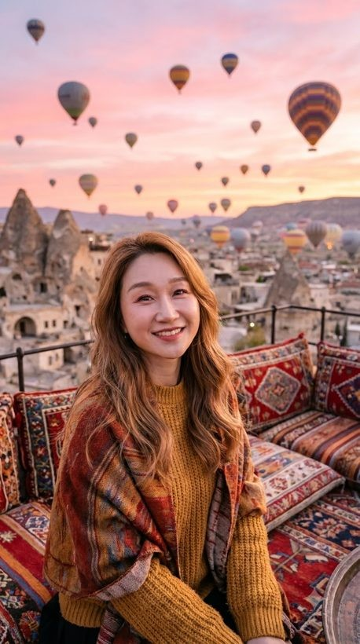

오늘의 프롬프트AI로사쌤 · 7번
카파도키아 열기구 여행, 사진에서 영상까지
먼저 사진을 만들고, 그 사진으로 영상을 만드는 두 단계예요. 남녀 누구나 쓸 수 있어요.
1단계사진 만들기

제미나이나 챗GPT에 본인 사진을 먼저 올리고, 아래 프롬프트를 붙여넣으세요.
업로드한 사진 속 인물을 주인공으로 한 실사 여행 사진. 얼굴을 그대로 반영하고 이목구비, 얼굴형, 헤어스타일, 안경을 바꾸지 말 것. 여성이면 여성, 남성이면 남성으로 표현. 화사하게 미소 짓는 밝은 얼굴.
옷은 머스터드색 니트와 어깨에 두른 따뜻한 색 숄, 편안한 여행 차림.
장면: 인물이 카파도키아의 전망 테라스에서 알록달록한 전통 문양 쿠션과 러그 위에 앉아 카메라를 향해 웃는 모습. 뒤쪽 하늘에는 수십 개의 색색 열기구가 떠 있고 아래로 기암괴석 계곡과 동굴 집들, 일출의 분홍·주황빛 하늘.
구도: 머리 위부터 허리 위까지의 상반신, 얼굴이 화면에 크게 보이게, 얼굴에 초점, 열기구와 계곡은 배경에 알아볼 만큼만 부드럽게 흐림. 일출 빛이 얼굴을 따뜻하고 환하게 비춤.
고해상도 4K 실사, 피부결과 머리카락까지 선명하게, 자연스러운 손가락, 열기구를 포함해 이미지 안에 글자·로고·워터마크 없음, 세로 9:16.
2단계영상 만들기
1단계에서 만든 사진을 영상 도구에 첫 장면으로 올리고, 아래 프롬프트를 붙여넣으세요.
첫 프레임 이미지 속 인물의 얼굴, 헤어스타일, 안경, 의상과 배경을 끝까지 그대로 유지.
0~4초: 뒤쪽 열기구들이 천천히 떠오르며 이동하고 일출 빛이 점점 밝아짐.
4~7초: 인물이 하늘을 한 번 올려다본 뒤 카메라를 보며 한국어로 말한다: "하늘 가득 열기구라니, 꿈꾸는 것 같아요."
7~10초: 두 손을 들어 하늘을 가리키며 환하게 웃음.
카메라는 얼굴이 계속 잘 보이도록 상반신 구도를 유지하며 아주 천천히 뒤로 물러나 열기구가 더 보이게 함. 소리는 멀리서 들리는 열기구 버너 소리와 새소리. 4K 고해상도 실사 영상, 10초 원테이크, 움직임은 자연스럽고 부드럽게, 얼굴과 손 변형 없음, 대사는 입 모양에 맞춰 자연스럽게, 화면에 자막·글자·로고 없음.
출처 · AI로사쌤